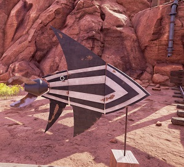
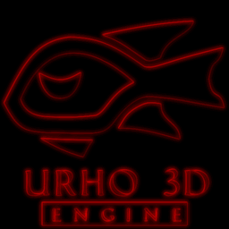
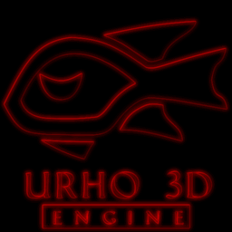

I thought that Urho3D could use a logo/icon that uses flat design, so here is my attempt, with a few variants.
[color=#FF8000]
[size=150]
Here is the link for the .zip containing the .xcf and .psd files.
[/size]
 [/color]
[/color]


Made in gimp using paths. The original is 512x512 in size, but the paths can be scaled so it can be made larger if needed (for a loading screen or something).
=================================================================================================================================
Also worth mentioning that I had thought about making a new flat logo for Urho before, but wasn’t sure exactly what it should look like. Then I recently saw this:

Screenshot from Obduction
Thought it wasn’t far off from what would make a good logo, and felt compelled to follow through with my idea.


 



 I mean, the description of this mighty fish is pretty epic. Reading, “among the fish”, doesn’t quite register the we’re talking about a fish (in my mind). But this thread has made things much clearer!
I mean, the description of this mighty fish is pretty epic. Reading, “among the fish”, doesn’t quite register the we’re talking about a fish (in my mind). But this thread has made things much clearer!

 [/quote]
[/quote]


 esspecialy on black background
esspecialy on black background


 ), here is what it looks like:
), here is what it looks like:

{kind=link}